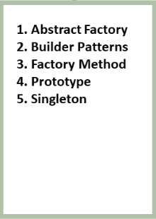
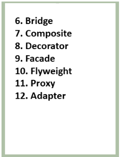
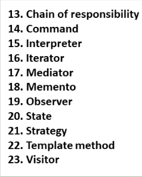

PATRONES DE DISEÑO
JONATAN ANDRES NOVOA RODRIGUEZ
¿QUE ES?
Los patrones de diseño son soluciones genéricas, reutilizables y aplicables a diferentes problemas de diseño de software. Estas plantillas identifican problemas en el sistema y, mediante prueba y error, brindan soluciones adecuadas a los problemas comunes que enfrentan los desarrolladores durante mucho tiempo.
¿Por qué usar patrones de diseño?
Los patrones de diseño le ayudan a garantizar la validez de su código porque son soluciones válidas, han sido probadas por muchos desarrolladores y son menos propensas a errores.
patrones creacionales
Los patrones de diseño más utilizados se clasifican en tres categorías principales, cada patrón de diseño individual conforma un total de 23 patrones de diseño.

Patrones estructurales
Facilitan soluciones y estándares eficientes con respecto a las composiciones de clase y las estructuras de objetos.

Patrones de comportamiento
Se utilizan para detectar la presencia de patrones de comunicación ya presentes y pueden manipular estos patrones.
